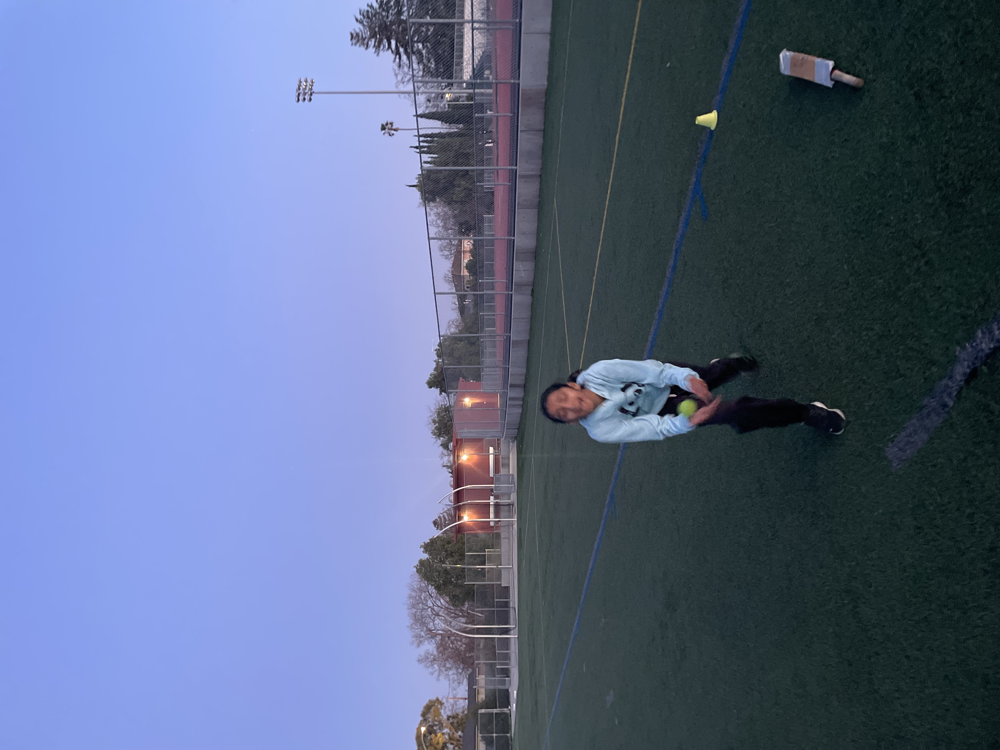
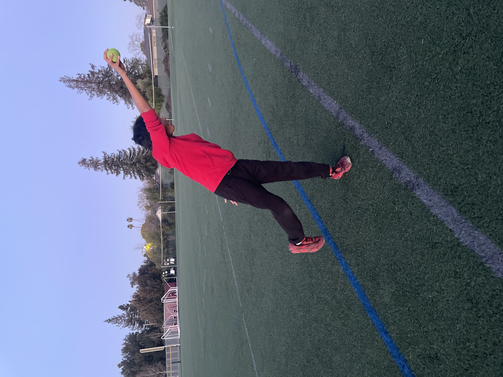

About us

"Bowling because I need to keep my arm straight" - Shreesta. Shreesta was a good student, but he had trouble keeping his arm straight while bowling. We decided to let him try wicket-keeping since that doesn't require bowling. He excelled at wicketkeeping due to his prior experience as a goalkeeper in soccer.

"How everyone had a chance to do everything" - Bhrami. Bhrami was the only girl and the oldest participating in the boot camp. While everyone else was there with their friends, Bhrami didn't know anyone. Still, Bhrami came every day and practiced as hard as anyone. She would always ask questions and always improve. In the end, she made new friends, and that is why Cricket Bootcamp is a success since it fostered connections and made cricket fun.

"Nothing really, but more people would help!" - Siddarth. Siddarth had previous coaching and played cricket competitively outside of Cricket Bootcamp. He only came because he was friends with Ishaan and Siddarth. Still, he was a great student who tried to learn as much as possible. When we started the practice games, Siddarth wanted more people to come since cricket is played with 22 people. But even though we only had 10, he still played his heart out and had fun.
